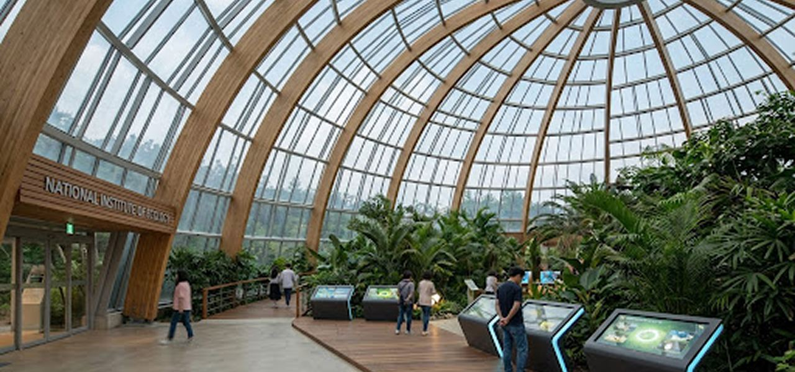

핵심 기능 · 전시·관람 / 예약
인터랙티브 시설 지도로
인터랙티브 시설 지도로
전시관과 관람동선을 미리 계획하세요
운영시간·이용요금·편의시설을 한눈에 확인하고, 예약 페이지로 바로 연결됩니다.
현재 전시 중인 프로그램
자연과 생태계를 깊이 이해할 수 있는
자연과 생태계를 깊이 이해할 수 있는
특별한 전시를 만나보세요
전시 정보를 불러오는 중…
관람 정보 및 추천 동선
운영시간·요금부터 가족 동선까지
관람 시간 및 요금
춘추계 (3월~10월)09:30–18:00
동계 (11월~2월)09:30–17:00
* 매주 월요일 휴관
대인 (만 19세 이상)5,000원
청소년 (만 13~18세)3,000원
소인 (만 5~12세)2,000원
가족형 추천
반나절 가족 탐험 코스
아이들과 함께 지루함 없이 핵심 시설을 둘러볼 수 있는 최적의 동선입니다. 에코리움 주요 관과 야외 놀이터를 포함합니다.
시설 지도
구역을 선택해 편의시설과 전시관을 확인하세요
